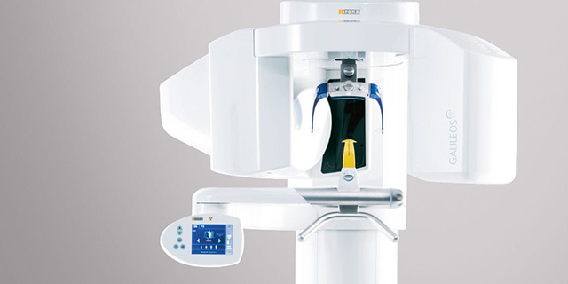
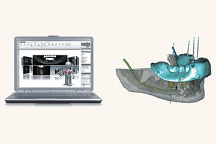
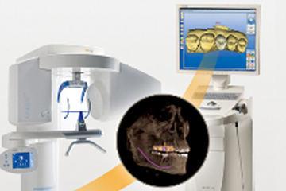
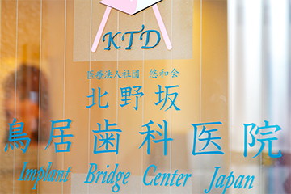

079-562-8471
079-562-8471- Home
- インプラント・入れ歯
インプラント治療で失った歯の機能回復をしませんか？Implant
永久歯は親知らずを除いて28本あります。そのすべての歯でバランスを取り、食べ物を噛み切ったり、細かく砕いたり、すりつぶしたりします。虫歯や歯周病、外傷などで1本でも失うと、噛み合わせのバランスがくずれ、お口全体の健康に悪影響を与えてしまうかもしれません。そうならないように早めに治療しましょう。

失った歯の機能回復のための治療法はおもに3つです。となりの歯を削って支台にして連結した人工歯を装着する「ブリッジ治療」、取り外し可能な「入れ歯治療」、そして人工歯根を埋め込む「インプラント治療」です。兵庫県神戸市三宮の歯医者「北野坂鳥居歯科医院」では、公益社団法人 日本口腔インプラント学会に在籍する、Dr.鳥居博士（歯学）が安心で安全な精密インプラント治療をご提供します。
当院では、公益社団法人日本口腔インプラント学会所属の
Dr.鳥居博士（歯学）を中心に、安心で安全なインプラント治療をご提供します。
インプラント治療
インプラント治療とは、失った歯の部分の顎の骨にチタン製の人工歯根（インプラント）を埋め込んで、その上にセラミック製の人工歯や特殊な入れ歯を装着して歯の機能回復をはかる治療です。医療の進歩とともに可能になった比較的あたらしい治療方法で、外科手術をともなうこともあり、さまざまな設備と精密な治療技術を求められる治療です。
当院の安心なインプラント治療の特徴
設備面の安心

インプラント治療において、精密診断はとても大切です。顎の骨や血管、神経の位置などを詳細に把握しなければ、どの位置にどのようにインプラントを埋入するかの治療計画が立てられないからです。
お口まわりの詳細情報を得るために、当院では歯科用CTを活用し立体画像で捉え、データとシミュレーションソフトを連動させて、インプラントの埋入位置を正確に決定します。そしてそのデータをもとに、精度の高いサージカルガイド（デジタルコンピュータ支援インプラント埋入誘導装置）を作製し、インプラント埋入手術時に装着して、シミュレーション通りの角度と深さにドリルを進め、正確に、しかも短時間でインプラント手術を行うのです。
技術面の安心

当院では、コンピュータ支援治療のトップダウントリートメントを採用し、精密デジタルインプラント治療をご提供します。
お口の中の噛み合わせ部分を、歯科用CTや口腔内スキャン、デジタル顎運動器で得たデータをもとに精密にコンピュータ上でデザインし、シミュレーションを経て、サージカルガイドを用いた精密治療をご提供するのです。そして歯や骨など組織との調和がとれたインプラント治療を行います。
実績の安心

当院のDr.鳥居は、東京医科歯科大学大学院生から東京医科歯科大学教官までの期間、インプラントに関する研究をしてまいりました。当時まだ認知度の低いインプラント治療を解剖組織学的見地から研究し、1994年よりインプラント治療で著名な田中譲治先生に享受し、さらに1995年には日本口腔インプラント学会に入会し、論文や学会発表などを重ねてきています。
〜治療後のメンテナンスが大切です〜
インプラントはチタン製で、その上に装着するのは人工歯なので虫歯にはかかりません。しかし、毎日の口腔ケアを怠ると歯周炎に似た「インプラント周囲炎」を起こしてしまうことがあります。インプラントのまわりの歯ぐきが腫れて、炎症が進むとインプラントを支えられなくなり、使えなくなってしまうのです。インプラントを長持ちさせるように、毎日のセルフケアとともに定期的な歯科医院でのメンテナンスを受けましょう。
入れ歯治療
失った歯の機能回復のための入れ歯治療は、もっとも歴史が古く、広く普及している取り外し可能な装置です。当院では、保険診療の入れ歯も自費診療の入れ歯も取り扱っています。患者様のご要望に沿えるように、さまざまな自費診療の入れ歯に対応します。バネがないノンクラスプデンチャー、歯根に装着した磁性キャップと入れ歯に埋め込んだ磁石の磁力で固定するマグネットデンチャー、薄くて丈夫なうえ食べ物の温度を伝えられる金属床などご相談ください。
インプラント費用内訳
| 商品名 | 費用 |
|---|---|
| ノーベルガイド | 1本25,750円～ |
| CT撮影 | 5,150円 |
| 診断料 | 15,450円 |
| インプラント | 360,500円 |
| 合計 | 360,500円～ |
※画像は左右にスクロールして確認することができます。
| 商品名 | 特徴 | 保障期間 | 費用 |
|---|---|---|---|
| Tek（当院にて） | 仮歯とは歯を削ってから最終的に出来上がる補綴物が入るまでの間に装着する仮の歯のことです。 | － | 1,550円 |
| Tek（プロビジョナル） | 仮歯とは歯を削ってから最終的に出来上がる補綴物が入るまでの間に装着する仮の歯のことです。 | － | 3,090円 |
 WEB予約
WEB予約